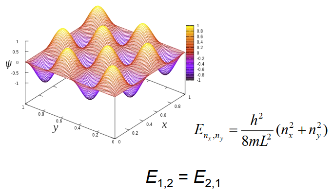

The fundamental concepts of classical physics, space, time, mass, and derived concepts, velocity, momentum, force, angular momentum, energy ... all rest on the principle that material points have trajectories. They are defined as lines in space-time. Even the dynamics of continuous, solid or fluid media describes the trajectories of the material points which constitute the bodies in motion. But the indeterminacy relation of Heisenberg prevents quantum particles from having such classical trajectories, since their position and velocity can not be exactly defined at the same time. How then can it explain all the appearances which legitimize the fundamental concepts of classical physics?
The principle of relativity states that all inertial systems are "created equal": the laws of physics are the same as long as they are formulated with respect to an inertial frame — no matter which. The first three items tell us that one inertial frame is as good as any other frame as long as the other frame differs by a shift of the coordinate origin in space and/or time and/or by a rotation of the spatial coordinate axes. What matters in physics are relative positions, relative times, and relative orientations (the orientations of objects relative to each other), inasmuch as these are unaffected by translations in space and/or time and by rotations of the spatial axes. In the physical world, there are no absolute positions, absolute times, or absolute orientations.